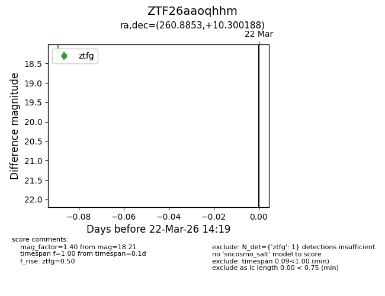
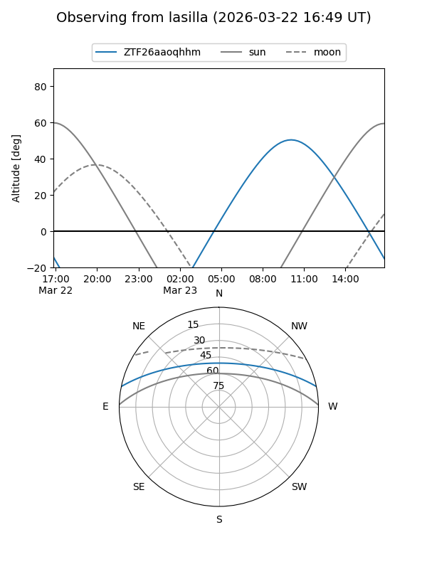
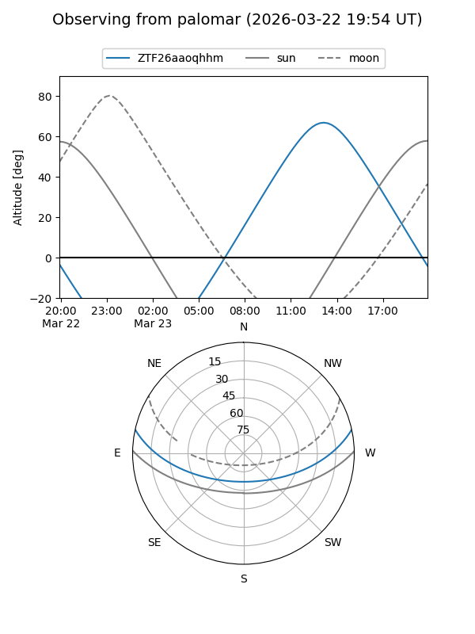

ZTF26aaoqhhm
Target ZTF26aaoqhhm at 2026-03-22 14:21
Aliases and brokers:
FINK: link
Lasair: link
ALeRCE: link
alt names
ZTF26aaoqhhm (ztf,fink_ztf)
Coordinates:
equatorial (ra, dec) = 260.8853,+10.30019
equatorial (HMS+DMS) = 17:23:32.48,+10:18:00.68
galactic (l, b) = (32.3831,+24.15388)
Flags:
Photometry:
last ztfg=18.21
1 ztfg detections
Lightcurve

Visibility


Additional plots